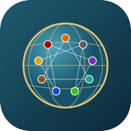
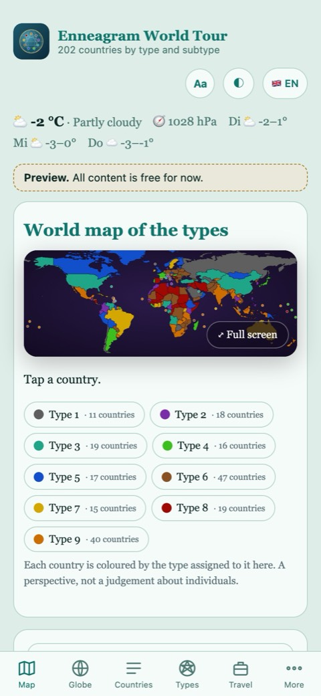
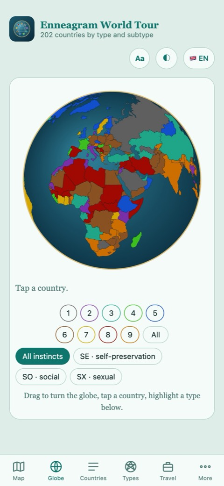
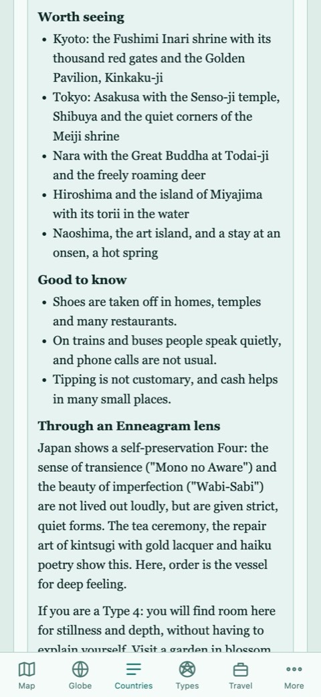
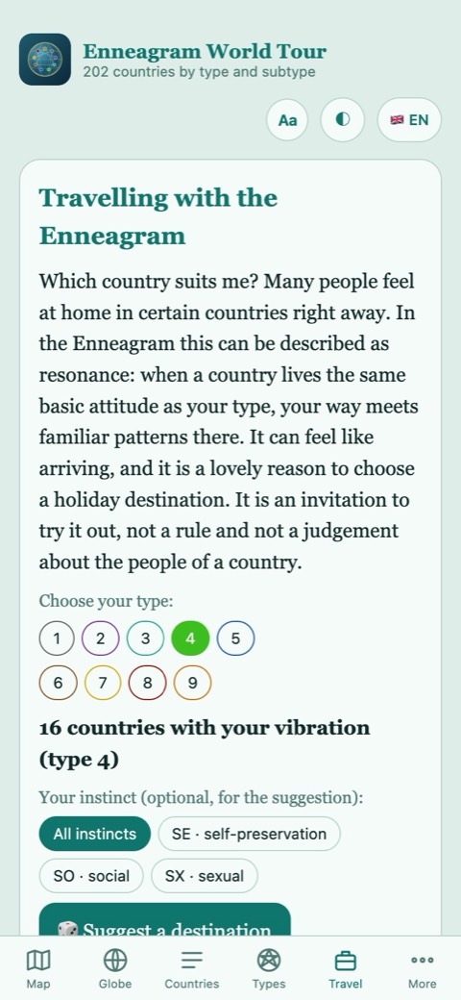

The app from the Enneagram Healing Compass

Enneagram World Tour
Which country suits you?
202 countries of the world, seen through Enneagram type and subtype: on the world map and on a spinning globe, with a small travel guide for every country covering places to go, good to know and the Enneagram lens. Find countries that suit your type.
Available now
Open the World TourUnlock all 202 countries: €9.99
In German and English. To get a first impression, the world map, the type and subtype of every country and six detailed country profiles are free. All 202 countries with travel guide are a one-time payment, no subscription: launch price €9.99, later €11.99. You receive access by e-mail.
The film about the app
90 seconds: world map, globe, travel guide, type tips, country duel and picture card.
Music: “Syncopated Journeys” by Detlef Rathmer.
A look inside the app
This is how the app looks on a phone.




What the app offers
The world map colours every country by its type. The globe can be spun; you can highlight one type or one instinct (self-preservation, social, sexual), or show all countries at once.
For each country: capital, language, currency, places to go, good to know and an Enneagram lens with tips for the types.
Choose your type and, if you like, your instinct. The app suggests a country that matches your basic attitude and shows how your type travels.
Save countries with a star and share the list. It stays on your device only.
Search by country or keyword, for example “tea ceremony”, and filter by region, type and instinct. The country duel puts two countries side by side.
Share a country as a picture card in the type colour. The song “Syncopated Journeys” by Detlef Rathmer plays across all tabs, and the texts can be read aloud.
Languages
The author
 Detlef Rathmer
Detlef RathmerNon-fiction author, Enneagram expert, lecturer and coach. A naturopath since 2000, with a focus on classical homeopathy.
Note: The app arranges countries for orientation and self-reflection. These are tendencies and suggestions, not a judgement about the people of a country. Travel information without guarantee; please check current travel and safety advice with your government’s foreign office.